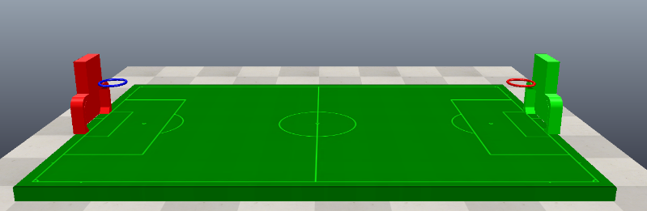

程式-1 <<
Previous Next >> 籃框程式
球場
最初我們利用一條sensor當作得分感測器，由於場上會同時有10顆球，僅需將得分之球重製。一開始我們先加入另外一顆球做測試，嘗試只將得分之球重製回初始位置。但後來發現不管哪顆球觸碰到sensor後，兩顆球都會同時回到初始位置。
後續我們建立第二版之測試，我們將sensor新增至兩條，分別獨立對應得分之球，並希望能將對應之球得分後回到初始位置，但嘗試了幾次，且重複確認程式有無錯誤，還是無法達成預期效果，所以打算放棄sensor，並不斷找尋另一種方法。
最終版本：我們打算利用物體碰撞之效果取代先前的sensor，當作另一種感測器，發現這種方法非常之順利，並達成了預期效果，改良後我們在足球門和籃框裡加入碰撞塊當作新一代感測器，並關閉其可見性以免阻擋視線，當球觸碰到碰撞塊後，不僅會得分，還能連同將得分之球重製回初始位置，其餘之球一樣在場上作動。我們就將此方法利用在足球門與籃框上，達成目的。
進足球門得1分(計分器旋轉36度)
進籃框得5分(計分器旋轉180度)

場地: 長 4m x 寬 2.5m, 外圍以足夠高度之隱形柵欄區隔
競技球: 白色, 直徑 0.1m, 重量 0.5kg
籃板: 長 0.3m, 高 0.3m, 寬 0.1m, 位於足球門上方中央
籃框: 由籃板向場內距離 0.1m, 內徑 0.2m, 框管直徑 0.02
足球門: 長 0.6m, 高 0.3m, 寬 0.1m
程式-1 <<
Previous Next >> 籃框程式